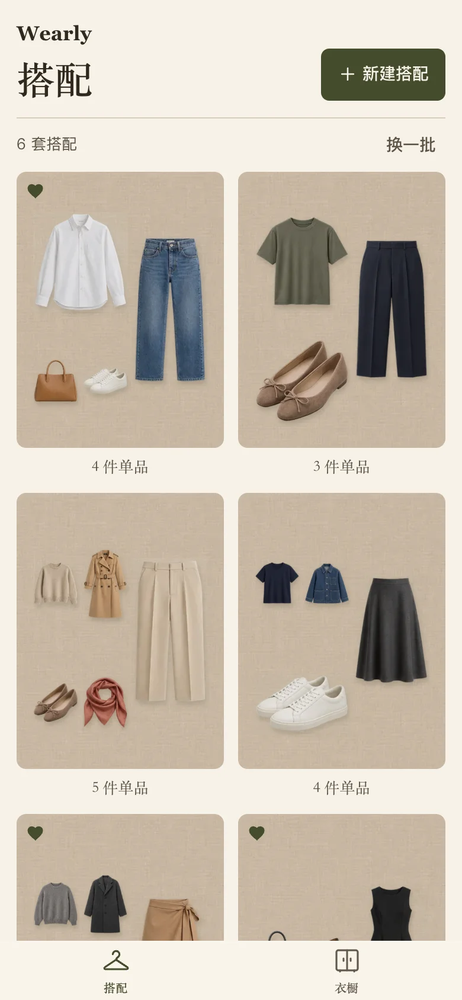
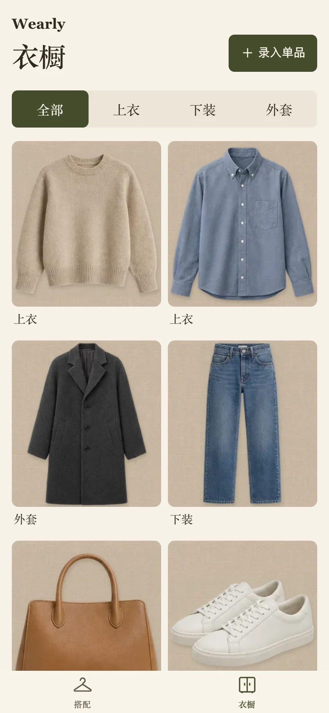
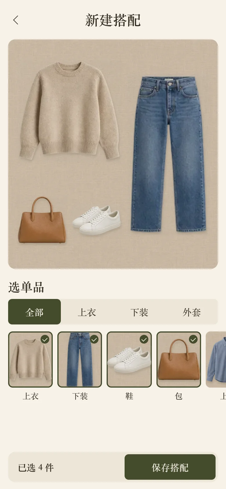
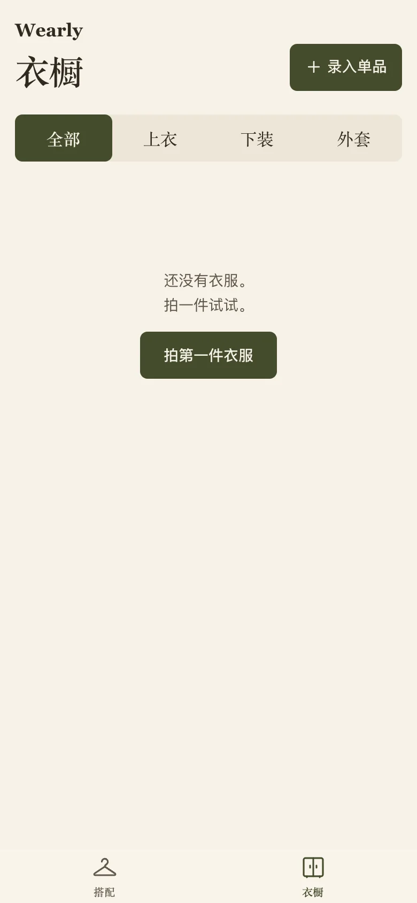
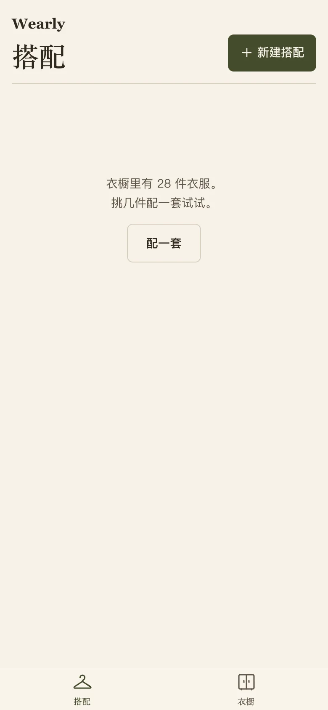
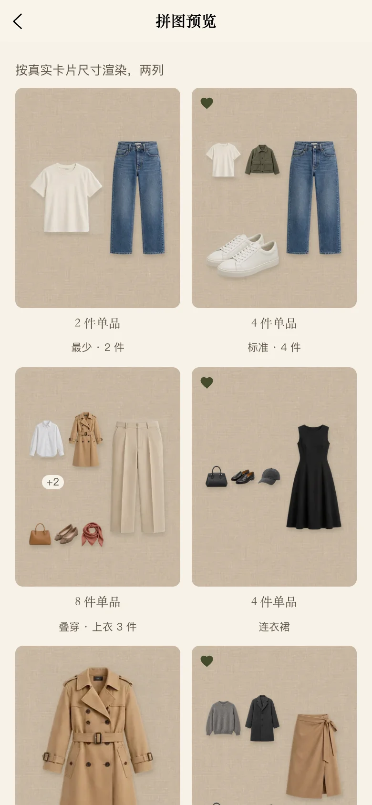

Wearly 界面原型
这组历史原型截图展示 Wearly 暖调服装目录的主要界面和交互状态。截图使用 390 px 手机视口，点击图片可查看原图。
搭配与衣橱
搭配卡片直接进入编辑。衣橱使用双列大图，品类栏可横向滑动。




新建与编辑搭配
两页共用上方平铺预览、横滑选衣和底部保存栏。保存后回到列表，新建卡片放在第一张。



录入与单品
拍照或选图后选择品类。原照片可以完整查看，也可以换图或修改品类。


菜单与确认
操作菜单从底部展开，删除和移出用居中确认框说明后果。


空状态
衣橱和搭配都为空时先进入衣橱。有衣服但未保存搭配时，搭配页提供「配一套」入口。




拼图构图
下装或连衣裙用右侧长区，上衣与外套放左上，鞋包与配饰放左下。空区释放给现有单品。

